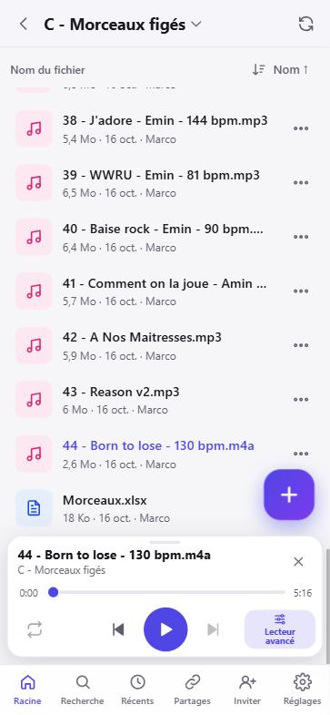
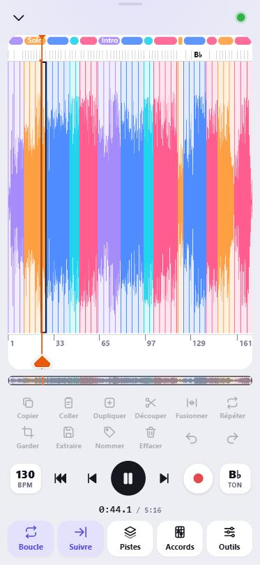
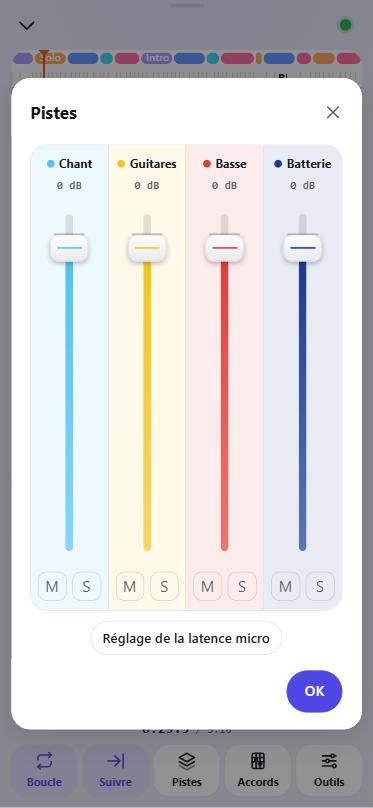
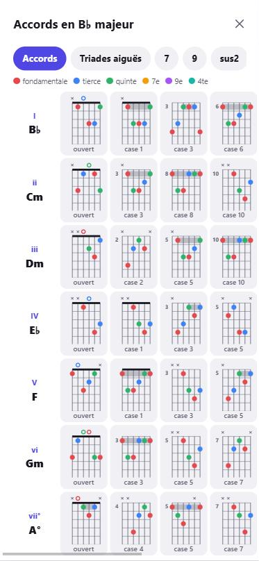
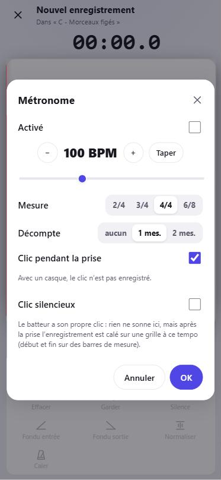
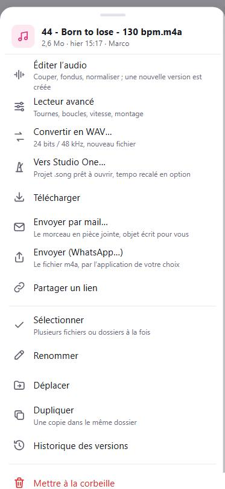

Comprendre 28JoursBox en 2 minutes
28JoursBox relie trois sortes d'appareils autour d'un même dossier de groupe :
- Le PC serveur : un PC Windows du groupe qui garde tous les fichiers, fait les analyses musicales (la nuit) et reste allumé. Une seule personne l'installe : elle devient administrateur.
- Les PC des membres : chacun a un dossier 28JoursBox sur son Bureau, qui se synchronise tout seul avec le serveur.
- Les téléphones (et tout navigateur) : rien à installer. On ouvre le lien d'invitation et on retrouve tous les fichiers, le lecteur avancé, l'enregistreur…
Tout reste chez vous. Fichiers, versions, prises, analyses et pistes séparées sont stockés sur le disque du PC serveur, pas dans un data center ; les calculs d'IA tournent sur ce PC, la nuit. Le revers : la sauvegarde est l'affaire du groupe (voir Sauvegarder). Pourquoi ce choix ?
Pseudo et mot de passe du groupe
Il n'y a pas de compte personnel avec mot de passe. Chaque membre choisit un pseudo, et un seul mot de passe vaut pour tout le groupe. Il est déjà inclus dans le lien d'invitation : en pratique, on n'a jamais à le taper.
Gardez toujours le même pseudo, sur tous vos appareils, et ne prenez jamais celui d'un autre membre : un pseudo qui existe déjà ouvre la session de ce membre (les majuscules ne comptent pas, « Marc » = « marc »). Un pseudo nouveau crée un nouveau membre.
Comment lire ce mode d'emploi
- Les noms de boutons et de menus sont écrits comme dans l'appli : Lecteur avancé.
- admin signale ce que seul l'administrateur du groupe peut faire.
- « Toucher » vaut pour le téléphone ; sur un PC, c'est un clic. « Appui long » : laisser le doigt environ une demi-seconde.
- Le menu ⋯ d'un fichier s'ouvre avec le bouton ⋯ de sa ligne, par un appui long sur la ligne, ou par un clic droit sur PC.
Installer
Le PC serveur (une seule fois)
À faire par la personne qui gère le groupe, sur le PC qui gardera les fichiers. Vérifiez d'abord la configuration requise.
- Téléchargez et lancez 28JoursBox-Serveur-Setup.msi (page Télécharger) et acceptez l'autorisation administrateur de Windows. Le MSI installe le service Windows « 28JoursBox Server », qui démarre avec le PC, même sans session ouverte.
- En fin d'installation, la notification Serveur 28JoursBox installé s'affiche et l'icône 28JoursBox apparaît près de l'horloge. Cliquez sur la notification ou sur l'icône (ou, dans son menu, Ouvrir l'interface web).
- La page Installation (Première mise en route) demande Nom du groupe et Votre pseudo : vous devenez l'administrateur du groupe. Cliquez sur Créer le groupe.
- La page Le groupe est prêt affiche le mot de passe du groupe et le lien d'invitation : envoyez le lien aux membres, puis Continuer vers les fichiers. Le lien se retrouve à tout moment dans Inviter quelqu'un.
L'icône du PC serveur (près de l'horloge) propose : Ouvrir l'interface web, Accès depuis l'extérieur (4G)…, Synchroniser aussi des fichiers sur ce PC… et Quitter (le serveur continue de tourner). Par défaut, le PC serveur n'a pas de dossier 28JoursBox synchronisé : choisissez Synchroniser aussi des fichiers sur ce PC… si vous voulez travailler aussi sur ce PC (l'assistant des membres s'ouvre, et l'appli PC complète avec ses Préférences devient disponible).
Ce qui est mis en place : le service Windows, une règle de pare-feu (réseau Privé seulement), les données dans C:\ProgramData\28JoursBox.
Pour que le serveur reste joignable : désactivez la mise en veille sur secteur (Paramètres Windows › Système › Alimentation), branchez-le en câble, et vérifiez que le réseau Windows est en profil Privé.
Accès depuis l'extérieur (4G)
Sans réglage, le serveur n'est joignable que depuis le Wi-Fi de la maison. Pour écouter et travailler en 4G, 28JoursBox intègre Tailscale Funnel (gratuit, sans nom de domaine, sans toucher à la box). Seul le PC serveur installe Tailscale ; les téléphones et les autres PC n'installent rien.
- Sur le PC serveur, menu de l'icône près de l'horloge › Accès depuis l'extérieur (4G)… (sur un PC serveur qui synchronise aussi des fichiers : Préférences › Serveur, carte Accès depuis l'extérieur (4G)). Cliquez sur Installer Tailscale : la page de téléchargement de Tailscale s'ouvre ; installez-le et connectez-vous à Tailscale.
- Revenez et cliquez sur J'ai installé Tailscale, vérifier (ou Vérifier à nouveau si Tailscale n'était pas encore connecté).
- Cliquez sur Activer l'accès extérieur. La première fois, une page Tailscale s'ouvre : autorisez Funnel, puis revenez. Acceptez l'autorisation administrateur.
- Résultat : « Accès extérieur activé : https://<pc>.<nom>.ts.net ». Le lien d'invitation utilise désormais cette adresse. À la maison, les PC continuent de passer par le réseau local (plus rapide pour les gros WAV).
Le PC serveur vérifie la publication toutes les 5 minutes et la rétablit si besoin. Si vous renommez la machine dans Tailscale, une notification Nouvelle adresse du serveur apparaît : cliquez dessus pour l'appliquer. Alternatives pour les initiés : Cloudflare Tunnel, ou redirection de ports de la box avec un proxy (Caddy), en renseignant PublicUrl dans server.json.
Les PC des membres
- Le plus simple : ouvrez le lien d'invitation dans le navigateur du PC et cliquez sur Installer 28JoursBox sur ce PC. Le lien est copié tout seul dans le presse-papiers. Sinon, téléchargez 28JoursBox-Client-Setup.msi.
- Lancez le fichier téléchargé. L'assistant s'ouvre et retrouve le groupe tout seul grâce au lien copié (cadre « ✓ Groupe … »). Sinon, collez le lien dans Lien d'invitation. Pas de lien ? Pas de lien ? Saisir l'adresse et le mot de passe.
- Choisissez Votre pseudo, puis C'est parti.
- Une seule page réunit ensuite l'emplacement du dossier, la jauge de place (tout en haut, dès que la place nécessaire est connue) et le choix des dossiers à garder sur ce PC. La jauge compare la sélection à la place du disque (en gardant 10 % libres) : verte, orange, ou rouge si ça ne tient pas ; un autre disque est proposé si celui choisi n'a pas la place. Le bouton ‹ Retour revient à la page du lien et du pseudo. Validez avec Synchroniser ces dossiers.
- C'est prêt ! : le dossier 28JoursBox est sur le Bureau, avec un raccourci 28JoursBox (web) vers l'interface web, et l'appli démarre avec Windows.
Emplacements refusés pour le dossier : un dossier réseau, la racine d'un disque, un disque qui n'est pas en NTFS, un dossier OneDrive ou déjà synchronisé par un autre logiciel. Si votre Bureau est dans OneDrive, le dossier est mis dans votre dossier personnel avec un raccourci sur le Bureau.
Messages possibles : « Ce lien n'est plus valable : le mot de passe du groupe a changé. Demandez le nouveau lien. », « Ce pseudo a été désactivé par l'administrateur du groupe. », « Trop de tentatives : patientez une minute avant de réessayer. ». Avec un certificat HTTPS auto-signé, cochez Faire confiance à ce serveur.
Les téléphones
- Ouvrez le lien d'invitation (reçu par message, ou en visant le QR code affiché par le PC : menu de l'icône › Ouvrir sur le téléphone (QR code)…).
- Écran Bienvenue ! : tapez Votre pseudo puis Rejoindre.
- Ajoutez l'appli à l'écran d'accueil pour l'avoir en plein écran et garder l'autorisation du micro :
- iPhone (Safari) : bouton Partager (carré avec une flèche) › Sur l'écran d'accueil › Ajouter.
- Android (Chrome) : menu ⋮ › Ajouter à l'écran d'accueil ou Installer l'application. Une carte d'astuce le propose aussi en haut de la liste des fichiers, et Réglages › Installer l'application.
Autre méthode : écran Connexion avec Pseudo et Mot de passe du groupe (majuscules, espaces et tirets ignorés). La session dure 30 jours et se prolonge à chaque usage. L'appli s'utilise en portrait (sauf photos et vidéos).
Sur Android, l'appli installée propose des raccourcis par appui long sur son icône : Enregistrer de l'audio, Téléverser des fichiers, Récents. Elle apparaît aussi dans le menu Partager des autres applis (photos, audio, PDF, liens YouTube).
LibreOffice (aperçu des documents Office)
Pour voir les fichiers Word, Excel et PowerPoint (et OpenDocument) sur les téléphones et dans le navigateur, installez LibreOffice (gratuit) sur le PC serveur uniquement, dans le dossier proposé par défaut (C:\Program Files\LibreOffice). Il est détecté tout seul, sans redémarrage. Les PC des membres et les téléphones n'en ont pas besoin.
- À la première ouverture d'un document, le serveur le convertit en PDF (« Préparation de l'aperçu… », 3 minutes au plus), puis le garde : les ouvertures suivantes sont immédiates. Les nouveaux documents sont aussi préparés la nuit.
- Sans LibreOffice, l'appli affiche « Aperçu indisponible : LibreOffice n'est pas installé sur le serveur. » avec un bouton Télécharger. Tout le reste fonctionne.
- Installé ailleurs ? Indiquez le chemin de
soffice.exedansLibreOfficePath(server.json). - Pour vérifier qu'il est détecté : Réglages › État du serveur › Outils, ligne Aperçu des documents (LibreOffice) (administrateur).
Mises à jour et désinstallation
- PC des membres : l'appli vérifie auprès du serveur 1 minute après le démarrage puis toutes les 6 heures. Une notification Mise à jour disponible apparaît ; installez-la depuis le menu de l'icône (Mettre à jour vers la version X…), le panneau, ou Préférences › Général. La synchro s'arrête pendant l'installation, puis 28JoursBox redémarre seul.
- PC serveur : installez le nouveau MSI serveur par-dessus, à la main. Le service est remplacé et redémarré ; la nouvelle version est ensuite proposée automatiquement aux PC des membres.
- Téléphones : rien à faire. La nouvelle version s'applique toute seule à l'ouverture, ou un bandeau propose Actualiser.
- Désinstaller (Paramètres Windows › Applications) retire le programme, le service, le démarrage automatique et les réglages, mais garde vos fichiers du dossier 28JoursBox et toutes les données du serveur : une réinstallation retrouve tout. Attention : la corbeille locale cachée du PC (
.sync) est supprimée.
L'application sur le PC
Elle vit dans la zone de notification, près de l'horloge. Si elle a été quittée, relancez-la depuis le menu Démarrer (« 28JoursBox »).
Sur un PC qui n'est que serveur, l'icône a un menu réduit : Ouvrir l'interface web, Accès depuis l'extérieur (4G)…, Synchroniser aussi des fichiers sur ce PC…, Quitter (le serveur continue de tourner). Ce chapitre décrit l'appli complète des PC qui synchronisent un dossier.
L'icône et ses couleurs
| Pastille | État |
|---|---|
| Verte, coche | « À jour » |
| Bleue, flèches | « Synchronisation en cours » ou « Démarrage… » |
| Grise, deux barres | « En pause », ou « En pause (enregistrement) » pendant qu'un logiciel de musique est ouvert |
| Gris foncé, croix | « Hors ligne » : le serveur ne répond pas (nouvel essai automatique) |
| Rouge | « Erreur » : voir l'onglet Activité |
| Orange, « ! » | Une action est attendue : connexion, confirmation d'une suppression massive, nouveau mot de passe du groupe |
Clic gauche : ouvre le panneau. Clic droit : le menu.
Le menu (clic droit)
- Ouvrir le dossier 28JoursBox et Ouvrir l'interface web.
- Ouvrir sur le téléphone (QR code)… : un QR code à viser avec l'appareil photo du téléphone. Il indique si ça marche partout (accès 4G actif) ou seulement sur le même Wi-Fi.
- Inviter quelqu'un… : le lien, Copier le lien, Copier le message, le QR code, et Envoyer l'application PC par e-mail (si l'envoi des mails est réglé). Le mot de passe n'est affiché que sur le PC serveur.
- Importer l'audio d'un lien du presse-papiers… : voir Importer depuis YouTube.
- Mettre à jour vers la version X… (s'il y en a une), Mettre en pause / Reprendre la synchronisation, Préférences…, Quitter 28JoursBox (libère proprement les verrous).
Le panneau
En haut : l'état, « Dernière synchro : il y a N min », votre pseudo et le serveur. Des bandeaux apparaissent quand il faut agir (suppression massive, mise à jour, nouveau mot de passe). Trois onglets :
- Activité : les 60 derniers événements (Envoyé, Reçu, Supprimé, Déplacé, Conflit, Erreur). Un clic montre le fichier dans l'Explorateur.
- Projets : les verrous en cours et la liste des projets .cpr et .song, avec Prendre la main / Libérer (voir verrous).
- Conflits (N) : les copies en conflit, avec Ouvrir, Afficher, Ignorer.
Les notifications (6 secondes, en bas à droite) ouvrent le panneau d'un clic.
Les Préférences
| Onglet | Ce qu'on y règle |
|---|---|
| Compte | Pseudo et serveur ; Inviter quelqu'un… ; Se déconnecter (la synchro s'arrête, vos fichiers restent sur le PC, l'assistant s'ouvre). Pour changer de serveur ou de groupe : se déconnecter puis refaire l'assistant avec le nouveau lien. |
| Dossier | Emplacement, place libre, Ouvrir et Déplacer… (voir déplacer le dossier). |
| Synchro sélective | Cochez les dossiers à garder sur ce PC, puis Appliquer. Un dossier décoché est retiré de ce PC mais reste sur le serveur et dans l'interface web. Option Synchroniser automatiquement les nouveaux dossiers. |
| Bande passante | Pendant qu'un logiciel de musique est ouvert (Cubase, Nuendo, Studio One) : Mettre la synchronisation en pause, Brider la synchronisation (choix par défaut, 2048 Ko/s, priorité basse) ou Synchroniser normalement. Et une limite permanente (0 = illimité). |
| Serveur PC serveur | Lien et mot de passe, Changer le mot de passe du groupe…, accès 4G, état du service, espace, ports, Redémarrer le service, Ouvrir le dossier des données. |
| Général | Lancer 28JoursBox au démarrage de Windows, dossier des journaux, version et mise à jour. |
Le nom du serveur et l'envoi des mails se règlent dans l'interface web (Réglages), par l'administrateur.
Le dossier synchronisé
Travaillez dans le dossier 28JoursBox comme dans n'importe quel dossier : tout ce que vous y déposez arrive chez les autres membres, et inversement. Tous les fichiers sont réellement sur votre disque, donc disponibles hors ligne.
Dans l'Explorateur Windows
- Colonne Statut avec les icônes habituelles de Windows : coche verte = synchronisé, flèches bleues = en cours.
- Colonne Verrou 28JoursBox : « Verrouillé par X » ou « Erreur : … ».
- À la première ouverture d'un dossier, l'affichage est réglé en liste avec la date de création, les plus récents en haut. La date de création d'origine est conservée d'un PC à l'autre : on retrouve quand une prise a vraiment été faite.
Ce qui n'est pas synchronisé
- Les fichiers techniques :
Thumbs.db,desktop.ini,.DS_Store,~$*,*.tmp,*.peak… - Les caches des logiciels de musique : à côté d'un projet Cubase (.cpr) :
Images/,Auto Saves/,*.bak,*.csh; à côté d'un projet Studio One (.song) :Cache/,History/,*.autosave,*.song.bak. - Vos propres exclusions : créez un fichier
.syncignoreà la racine du dossier 28JoursBox, un motif par ligne (*et?; un/final pour un dossier ;#pour un commentaire). Il est pris en compte dès qu'il change. - Les noms interdits sous Windows (
: * ? " < > |, point ou espace final, CON, NUL…) sont refusés.
Copies en conflit : rien n'est jamais écrasé
Si deux personnes modifient le même fichier en même temps, la version du serveur garde le nom et la vôtre devient nom (copie en conflit de NOM-DU-PC 2026-10-09).ext, envoyée au groupe. Même chose si vous modifiez un fichier verrouillé par un autre membre. Une modification l'emporte toujours sur une suppression. Retrouvez les conflits dans l'onglet Conflits du panneau.
Corbeille, versions et suppressions massives
- Un fichier supprimé part dans la corbeille du serveur pour 30 jours, et chaque fichier a un historique des versions de 30 jours : voir Corbeille et versions.
- Tout ce que la synchro retire ou remplace sur votre PC est aussi gardé 30 jours dans le dossier caché
28JoursBox\.sync\trash. - Pause de sécurité : si plus de 500 fichiers, ou plus de 20 % du dossier, sont supprimés en 10 minutes, les suppressions sont mises en attente (icône orange, notification Suppression massive). Dans le panneau, choisissez Supprimer aussi sur le serveur (récupérable 30 jours dans la corbeille) ou Restaurer les fichiers.
- Les transferts sont reprenables : une coupure en plein envoi d'une session de plusieurs Go ne fait rien perdre. Un fichier en cours d'écriture n'est envoyé qu'une fois stable.
Projets Cubase et Studio One : les verrous
Quand vous ouvrez un projet .cpr (Cubase, Nuendo) ou .song (Studio One) du dossier 28JoursBox, l'appli le reconnaît au titre de la fenêtre et pose un verrou à votre nom. Les autres membres voient le fichier en lecture seule, « Verrouillé par … » dans l'Explorateur et le panneau, et reçoivent une notification Projet verrouillé s'ils essaient de l'ouvrir (leurs modifications deviendraient une copie en conflit).
- Le verrou est renouvelé toutes les 2 minutes et expire tout seul après 10 minutes si votre PC disparaît. À la fermeture du projet, l'envoi final se fait, puis le verrou est libéré.
- Les médias (WAV) passent avant le fichier projet : à l'ouverture chez les autres, il ne manque rien.
- Verrou manuel : panneau › Projets › Prendre la main / Libérer, ou menu ⋯ du projet dans l'interface web. Un verrou pris à la main n'est pas relâché automatiquement.
- Pendant qu'un logiciel de musique est ouvert, la synchro est bridée pour ne pas gêner l'enregistrement (réglable dans Préférences › Bande passante).
Déplacer le dossier 28JoursBox
- Fermez vos projets et fichiers audio ouverts.
- Préférences › Dossier › Déplacer…, choisissez le nouvel emplacement (vide, sur un disque NTFS, avec la place nécessaire), puis confirmez.
- Sur le même disque, c'est immédiat ; sur un autre disque, tout est copié et vérifié avant de supprimer l'ancien dossier (barre de progression, bouton Annuler). Rien n'est renvoyé au serveur.
Sur le téléphone : les fichiers

Se déplacer
- Barre du bas : Racine (dossier principal), Recherche, Récents (les 100 derniers fichiers modifiés par le groupe), Partages (liens publics), Inviter, Réglages. Sur PC, le menu de gauche ajoute Corbeille et le bouton Ajouter.
- Ouvrir un dossier : le toucher. Remonter : flèche ‹ en haut, bouton retour du téléphone, ou glisser le doigt vers la droite depuis le bord gauche de l'écran : on remonte au dossier parent, niveau par niveau, jusqu'à la racine.
- Toucher le nom du dossier en haut ouvre Aller à : tous les dossiers au-dessus, pour remonter d'un coup.
- Actualiser : bouton en haut à droite, ou tirer la liste vers le bas. La liste se met aussi à jour toute seule.
- L'appli rouvre le dernier dossier consulté, à la même position.
Trier
Le bouton de tri (ex. Nom ↑) ouvre Trier par : Nom, Date, Type, Taille ; retoucher le choix actif inverse l'ordre. Les dossiers restent en tête. Chaque dossier garde son propre tri : celui de l'administrateur vaut pour tout le groupe, celui d'un membre ne vaut que pour lui (sur tous ses appareils).
Gestes sur une ligne
- Toucher un morceau : il se charge dans le mini-lecteur, en pause. Les autres morceaux du dossier forment la file de lecture.
- Toucher un autre fichier : visionneuse plein écran (photos, vidéos, PDF, Office, texte).
- Glisser la ligne vers la gauche : boutons rapides. Pour un fichier audio : Éditer, Lecteur, WAV, Renommer, Supprimer (corbeille).
- Appui long : petite vibration. Lâcher sans bouger ouvre le menu ⋯ ; tirer permet de déplacer l'élément en le déposant sur un dossier, sur la flèche ‹ (dossier parent) ou sur Racine. Le message propose Annuler.
Le menu ⋯ d'un fichier
| Entrée | Ce qu'elle fait |
|---|---|
| Éditer l'audio | Couper, fondus, normaliser ; crée une nouvelle version (détails). |
| Lecteur avancé | Parties, boucles, tempo, pistes séparées, accords (détails). |
| Convertir en WAV… | Nouveau fichier WAV, 24 bits / 48 kHz par défaut (détails). |
| Vers Studio One… | Projet .song prêt à ouvrir (détails). |
| Vers Cubase… | Projet .cpr prêt à ouvrir dans Cubase 14 ou plus récent (détails). |
| Télécharger | Télécharge l'original sur l'appareil. Pour un dossier : Télécharger (zip), tout le dossier jusqu'à 500 Mo ; le serveur prépare le zip et un téléchargement coupé reprend où il en était. |
| Envoyer par mail… | Le serveur envoie le morceau en pièce jointe (détails). |
| Envoyer (WhatsApp…) | Le fichier m4a par l'application de votre choix (détails). |
| Partager un lien | Lien public en lecture seule (détails). |
| Prendre la main / Libérer | Projets .cpr et .song : verrouille ou libère le projet pour les autres. |
| Sélectionner | Mode sélection : cochez plusieurs éléments, puis Tout, Déplacer ou Corbeille. |
| Renommer, Déplacer, Dupliquer | Avec Annuler dans le message qui suit. Dupliquer crée « nom (copie).ext » sans prendre de place sur le serveur. |
| Historique des versions | Écouter, voir, télécharger ou restaurer une ancienne version (détails). |
| Mettre à la corbeille | Récupérable 30 jours. Pour un dossier, une confirmation annonce son contenu. |
| Supprimer définitivement… admin | Dossiers seulement, sans passer par la corbeille, irréversible (double confirmation). |
Depuis Récents ou Recherche, le menu propose aussi Afficher dans le dossier. Un élément verrouillé par un autre membre ne peut être ni renommé, ni déplacé, ni supprimé.
Ajouter des fichiers : le bouton +
| Entrée | Usage |
|---|---|
| Enregistrer de l'audio | Ouvre l'enregistreur (détails). |
| Fichiers du téléphone | App Fichiers (iPhone) ou gestionnaire de fichiers (Android) : audio, PDF, Office, partitions, projets… plusieurs à la fois. |
| Importer depuis un lien YouTube | La bande son d'une vidéo, rangée en .m4a (détails). |
| Prendre une photo ou une vidéo | Ouvre l'appareil photo. |
| Envoyer les nouvelles photos | Choisissez des photos et vidéos dans la photothèque (indique la date du dernier envoi). |
| Nouveau dossier | Crée un dossier ici. |
- Un panneau suit l'envoi (3 fichiers à la fois). Il reprend tout seul après une coupure réseau ou si l'appli a été fermée.
- Les MP3 et WAV envoyés depuis le téléphone ou le navigateur sont convertis en .m4a (AAC 256 kbit/s, étiquettes gardées) ; l'original part à la corbeille (récupérable 30 jours). Les AIFF et FLAC ne sont pas convertis. Les fichiers déposés dans le dossier 28JoursBox d'un PC ne sont jamais convertis.
- Même nom et même contenu : rien n'est ajouté. Même nom, contenu différent : « nom (1).ext ».
- Sur PC, on peut aussi glisser des fichiers de l'ordinateur sur la liste.
- Envoyer un dossier entier (navigateur d'un PC) : glissez le dossier dans la fenêtre, ou choisissez-le dans la fenêtre d'envoi ; ses sous-dossiers sont recréés sur le serveur, et chaque fichier part en envoi reprenable.
Importer le son d'une vidéo YouTube
- Copiez le lien de la vidéo (ou, sur Android, partagez la vidéo depuis l'appli YouTube vers 28JoursBox).
- + › Importer depuis un lien YouTube, puis Coller. Nom du fichier est facultatif (titre de la vidéo sinon). Touchez Importer.
- Suivez « Téléchargement N % » puis « Conversion en m4a… ». Vous pouvez fermer la fenêtre : l'import continue. À la fin : « Importé : nom.m4a ». Le morceau est ensuite analysé comme les autres.
Sur PC : copier le lien, puis menu de l'icône › Importer l'audio d'un lien du presse-papiers…, choisir le dossier, Importer ici.
Limites : un import à la fois, vidéo de 20 minutes au plus, ni listes de lecture ni directs, sites publics seulement. Un morceau importé reste réservé au groupe : il ne peut pas être partagé par lien public. Respectez les droits des œuvres et les conditions des sites.
Écouter : le mini-lecteur
- En bas de l'écran : titre, précédent, lecture/pause, suivant, ↑ pour agrandir en lecteur avancé, ✕ pour fermer, barre de position.
- Il continue sur l'écran verrouillé, au casque et dans CarPlay (lecture, pistes précédente/suivante, ±10 s).
- Il s'efface quand le morceau en cours sort de l'écran au défilement, et revient dès qu'il réapparaît. Glissez-le vers le haut pour ouvrir le lecteur avancé.
- Les WAV et AIFF sont lus dans une version d'écoute compressée préparée par le serveur : une répétition en WAV s'écoute en 4G sans attendre.
Voir les photos, vidéos, PDF et documents
- Photos et vidéos : plein écran, paysage possible. Glisser ou flèches pour passer aux autres fichiers du dossier.
- PDF : boutons de zoom et compteur de pages. Toucher le document le passe en plein écran page par page ; on glisse pour tourner les pages.
- Word, Excel, PowerPoint : affichés comme un PDF si LibreOffice est installé sur le PC serveur.
- Textes (paroles, grilles ChordPro, .txt, .csv…) : affichés en texte brut.
- Autres fichiers (projets, archives) : fiche avec Télécharger.
Rechercher
Recherche trouve une partie du nom (pas le contenu), sans tenir compte des accents ni des majuscules : « mix », « .cpr », « basse ». Les résultats arrivent pendant la frappe, avec le dossier de chacun. Sur PC, la barre du haut propose des suggestions.
Partager et inviter
Lien public (pour quelqu'un hors du groupe)
- Menu ⋯ d'un fichier ou d'un dossier › Partager un lien.
- Facultatif : un Mot de passe et une date d'Expiration.
- Créer le lien, puis Copier ou partager.
La personne voit le fichier (lecteur audio, photo, vidéo, PDF) ou parcourt le dossier, en lecture seule, et peut télécharger. Gérez tous les liens du groupe dans Partages : Copier le lien, Révoquer (le lien cesse aussitôt de marcher). Un lien ne se modifie pas : créez-en un nouveau et révoquez l'ancien. La racine et les morceaux importés de YouTube ne se partagent pas.
Envoyer par mail
Le mail part du serveur : pas besoin d'appli de messagerie. Menu ⋯ › Envoyer par mail…, tapez les adresses (les adresses déjà utilisées sont proposées), un message facultatif, puis Envoyer. L'objet est écrit pour vous (« 🎵 titre — de la part de pseudo »). Le morceau est joint en m4a ; au-delà de 18 Mo, un lien d'écoute valable 30 jours est envoyé à la place. Limites : 10 destinataires par envoi, 40 envois par heure. Il faut que l'administrateur ait réglé l'envoi des mails.
Envoyer par WhatsApp (ou autre appli)
Menu ⋯ › Envoyer (WhatsApp…) : le fichier m4a est préparé sur le téléphone (« Prêt : nom (X Mo) »), puis Partager ouvre la feuille de partage du téléphone. Choisissez WhatsApp, Messages… Le morceau part en m4a, pas compressé par WhatsApp comme une note vocale.
Inviter un membre
Inviter (barre du bas), Inviter quelqu'un sur PC, ou Réglages › Afficher le lien et le mot de passe : le lien avec Copier et Partager le lien, le mot de passe du groupe, et Envoyer l'application PC par e-mail. Le lien utilise l'adresse 4G si elle est configurée. Le QR code est dans l'appli PC (Ouvrir sur le téléphone (QR code)…).
Le lecteur avancé
Le studio de répétition de poche : chaque morceau découpé en parties de couleur, avec ses accords, ses instruments séparés, un tempo réglable et des boucles au sample près.
Ouvrir et fermer
- Ouvrir : menu ⋯ d'un morceau › Lecteur avancé ; glisser la ligne vers la gauche › Lecteur ; ou dans le mini-lecteur, bouton ↑, toucher le titre, ou glisser le mini-lecteur vers le haut.
- Le lecteur ne démarre jamais tout seul. Ouvert depuis le mini-lecteur, il reprend la même position, en pause.
- Fermer : chevron ↓ en haut à gauche, glisser l'en-tête vers le bas, ou bouton retour. La lecture s'arrête ; le mini-lecteur garde la position.
- Si l'analyse n'est pas encore prête, « Analyse du morceau… » s'affiche quelques secondes. Sans analyse possible, le lecteur passe en lecture simple (pas de blocs, ⏪ et ⏩ sautent de 10 s).
Ce qu'on voit

Sur la forme d'onde, de haut en bas : la bande des parties (Intro, Couplet, Refrain…), la rangée des accords (toucher un accord y amène la lecture), les blocs (une tourne chacun, avec sa lettre A, B, C), la règle avec les numéros de mesure et la tête de lecture orange.
Dessous : la frise du morceau entier, la barre d'édition, le transport (BPM, ⏮, ⏪, ▶, ⏩, ⏺, TON) et la barre Boucle, Suivre, Pistes, Accords, Outils.
Couleurs fixes des parties, les mêmes d'un morceau à l'autre : Intro violet, Couplet bleu, Pré-refrain cyan, Refrain rose, Pont jaune, Solo orange, Break gris, Outro vert. Une partie est faite de tournes lettrées A, B, C… : deux tournes identiques ont la même lettre.
Les gestes
| Geste | Effet |
|---|---|
| Toucher un bloc | Le sélectionne (cadre violet). Retoucher le désélectionne. Ne lance pas la lecture. |
| Double toucher un bloc | Sélectionne toute sa partie. |
| Toucher la bande des parties | Sélectionne la partie. |
| Appui long sur la bande des parties | Menu des tournes : changer la lettre (« Tourne A », « Nouvelle tourne »), Renommer « Refrain »… (partout dans le morceau). |
| Tirer les poignées du cadre | Étend ou réduit la sélection, bloc par bloc. |
| Appui long sur un bloc puis glisser | Déplace le bloc (ou la sélection) : un fantôme suit le doigt, un repère montre où il sera posé. |
| Glisser un bloc vers le haut | Le supprime de l'arrangement (« Supprimer » apparaît). Annuler le rétablit. |
| Doigt posé sur la sélection + toucher d'autres blocs | Sélection de blocs épars (non voisins). |
| Glisser horizontalement | Fait défiler, avec élan. |
| Pincer à deux doigts | Zoome (sur PC : Ctrl + molette). |
| Taquet du haut d'une limite | Déplace la limite entre deux blocs, aimantée sur les débuts de tourne et les temps. Une bulle indique la longueur des deux blocs. |
| Rond du bas d'une limite | Réglage fin, sans aimant, deux fois plus lent que le doigt (bulle « Précis · +12 ms »). Zoomez pour plus de précision. |
| Toucher ou glisser la règle du bas | Déplace la tête de lecture. Appui long sur sa poignée : Coller ici ou Couper ici. |
| Toucher la frise | Remet tout le morceau à l'écran. |
Au clavier (PC) : Espace = lecture/pause, ← → = bloc précédent/suivant, Ctrl+Z / Ctrl+Maj+Z = annuler/rétablir, Échap = fermer.
La barre d'édition
| Bouton | Effet |
|---|---|
| Copier / Coller | Copie la sélection ; Coller l'insère à la tête de lecture, sur le bord de bloc le plus proche. |
| Dupliquer | Copie juste après la sélection. |
| Découper | En 2, En 3, En 4, Chaque mesure, Toutes les 2 mesures, Toutes les 4 mesures, Ici (à la tête de lecture). |
| Fusionner | Plusieurs parties → une seule partie ; une partie → un seul bloc ; un bloc seul → avec le suivant. |
| Répéter | Chaque toucher ajoute un passage (×2, ×3…). Appui long : choisir ×1 à ×8 ou Autre nombre…. |
| Garder | Ne garde que la sélection ; le reste quitte l'arrangement. |
| Extraire | Enregistre la sélection comme un nouveau fichier, sans toucher au morceau. |
| Nommer | Intro, Couplet, Pré-refrain, Refrain, Pont, Solo, Break, Outro, ou Autre nom… : la sélection devient une partie, ses tournes sont relettrées. |
| Effacer | Retire la sélection de l'arrangement (le fichier n'est pas touché). |
| Annuler / Rétablir | Jusqu'à 100 étapes. |
Partagé ou personnel ? Les corrections du découpage (limites, découpes, fusions de blocs qui se suivent, noms, lettres) sont envoyées au serveur et deviennent le découpage de tout le groupe. Dès que vous réarrangez (effacer, garder, déplacer, copier, coller, dupliquer), le découpage reste sur votre téléphone et plus rien n'est partagé tant que l'ordre d'origine n'est pas rétabli. Les répétitions ×N ne sont jamais partagées.
Tempo et tonalité
- BPM : toucher ouvre la fenêtre Tempo (−1, curseur, +1, raccourcis 75 %, 90 %, origine). Ou maintenir puis glisser verticalement : la valeur s'applique au lâcher. De 50 % à 150 %, sans changer la hauteur des notes. Le serveur prépare la version étirée (« Tempo en service ») pendant que la lecture continue. Votre tempo est mémorisé par morceau, sur tous vos appareils.
- TON : maintenir puis glisser transpose de −6 à +6 demi-tons. Toucher ouvre Gamme et accords : la tonalité, les notes de la gamme, la pentatonique conseillée pour improviser, les accords du morceau, Transposer, Tonalité originale (la corriger vaut pour tout le groupe) et Notation C D E ou Do Ré Mi.
Boucle, métronome et entraîneur
- Boucle : active à l'ouverture. Avec une sélection, seule la sélection boucle, au sample près ; sans sélection, tout le morceau. Même une boucle de batterie de quelques secondes repart sans aucun temps mort.
- Suivre : la vue suit la tête de lecture, page par page.
- Outils :
- Décompte d'une mesure avant chaque départ ;
- Métronome calé sur les temps détectés ;
- Entraîneur de tempo : sélectionnez d'abord le passage, puis réglez Départ, Arrivée, Palier (+1, +2, +5) et Passages (×1, ×2, ×4), puis Démarrer. La boucle accélère à chaque palier jusqu'à « Objectif atteint ». Une pastille en haut permet d'arrêter ;
- Utiliser l'analyse fine ou Revenir à l'analyse de base ;
- Réinitialiser… : Remettre dans l'ordre d'origine, ou Revenir à l'analyse (efface aussi la correction partagée du groupe).
Pistes : séparer les instruments et mixer

Une tranche par instrument : Chant, Guitares, Basse, Batterie, puis vos prises. Curseur en dB (double toucher = 0 dB), M (muet) et S (solo). Touchez OK : le serveur prépare le mélange (« Mélange en service »). Les réglages sont mémorisés par morceau.
Appui long sur le nom d'une prise : N'écouter que cette prise, Renommer…, Supprimer.
Une fois les instruments séparés, les accords sont recalculés et plus fiables.
Accords et diagrammes de guitare

Le bouton Accords ouvre les diagrammes de guitare de la gamme (I, ii, iii, IV, V, vi, vii°), avec plusieurs positions sur le manche (« ouvert », « case 3 »…), et les onglets Triades aiguës, 7, 9, sus2, sus4. Les points sont colorés : fondamentale, tierce, quinte, 7e, 9e, 4te. Pincer pour agrandir.
Enregistrer une prise par-dessus
- Revenez au tempo et à la tonalité d'origine (obligatoire pour une prise).
- La première fois sur ce téléphone, mesurez le délai du micro : sans casque, volume monté, au calme, touchez Mesurer (8 clics). Réglage aussi accessible dans Pistes › Réglage de la latence micro.
- Branchez un casque (filaire de préférence) : le micro ne doit pas entendre le morceau.
- Dans Pistes, choisissez ce que vous voulez entendre (par exemple tout sauf votre instrument). Option : sélectionnez un passage avec Boucle pour faire une prise par passage.
- Touchez ⏺ : une mesure de décompte, puis lecture et enregistrement en même temps (cadre rouge, durée, vumètre). Retouchez ⏺ ou pause pour arrêter.
- La prise est recalée exactement sur le morceau et devient un fichier « Titre - Prise N.m4a » à côté du morceau, partagé avec tout le groupe, et une piste de la console.
Analyse de base et analyse fine
- Analyse de base (pastille rouge) : quelques secondes après l'envoi. Tempo, mesures, tournes et parties nommées « Partie A », « Partie B »…
- Analyse fine (pastille verte) : des parties reconnues et nommées (riffs, couplets, solos…), plus fidèles. Faite chaque nuit pour les morceaux m4a, ou à la demande : toucher la pastille rouge › Utiliser l'analyse fine (quelques minutes, « Analyse fine N % » ; vous pouvez fermer le lecteur), puis Appliquer.
- Elle remplace d'office l'analyse de base. Revenir à l'analyse de base est un choix partagé avec le groupe, que l'analyse fine ne remplacera plus.
Enregistrer un montage, extraire un passage
- Après avoir réarrangé (déplacé, effacé, copié, répété), touchez Enregistrer en haut : Enregistrer le montage crée « Titre (montage) » dans le même dossier, même format et même qualité que l'original, fabriqué par le serveur sans perte. Ou Remplacer l'original : l'original reste dans l'historique des versions.
- Extraire enregistre seulement la sélection (répétitions comprises) dans un nouveau fichier.
Dans la voiture et écran éteint
Le lecteur passe par le lecteur natif du téléphone : écran verrouillé, centre de contrôle et CarPlay fonctionnent, et « piste précédente / suivante » saute de bloc en bloc. Les boucles et le tempo changé continuent écran éteint. Après une interruption (GPS, appel), la lecture reprend toute seule. Le décompte, le métronome, les prises et l'entraîneur sont moins fiables en CarPlay. Les derniers mélanges et tempos restent réécoutables hors ligne.
Enregistrer et éditer l'audio
Faire un nouvel enregistrement
- Dans le dossier de destination : + › Enregistrer de l'audio (ou, appli installée sur Android, appui long sur l'icône › Enregistrer de l'audio).
- Autorisez le micro si le téléphone le demande. Le son est capté brut : ni réduction de bruit ni gain automatique.
- Touchez le gros bouton rouge. La forme d'onde se dessine en direct ; « SAT » s'allume en cas de saturation (éloignez le micro).
- Retouchez le bouton rouge pour arrêter. L'appli présélectionne la partie jouée (sans les paroles du début et de la fin) et normalise le niveau : touchez Garder pour ne garder que la musique.
- Écoutez, retouchez au besoin (outils ci-dessous), puis touchez Enregistrer (disquette).
- Donnez un Titre (le fichier s'appellera « AAAAMMJJ Titre.m4a »), puis :
- Envoyer maintenant : envoi au serveur, conversion en m4a ;
- Garder sur le téléphone : idéal en répétition sans réseau. Un bandeau « N prise(s) à envoyer » apparaît dans la liste des fichiers ; touchez Tout envoyer plus tard.
Une prise part du téléphone sans perte (FLAC) et l'envoi reprend tout seul après une coupure, à la réouverture de l'appli ou au retour du réseau. Une prise n'est effacée du téléphone qu'une fois arrivée sur le serveur. Un nouveau toucher du bouton rouge remplace la prise précédente.
Ne changez pas d'application pendant une prise : l'enregistrement s'arrête (ce qui a été enregistré est conservé). Un appel entrant l'arrête aussi. Une prise est limitée à 90 minutes. Il faut l'adresse https (lien d'invitation) et Safari (iPhone) ou Chrome (Android). Micro refusé sur iPhone : « aA » dans la barre d'adresse › Réglages du site web › Microphone › Autoriser.
Enregistrer au clic (métronome)

Activé ; le tempo avec − / +, le curseur (40 à 220) ou Taper en rythme ; Mesure 2/4, 3/4, 4/4, 6/8 ; Décompte aucun, 1 ou 2 mesures ; Clic pendant la prise (avec un casque, le clic n'est pas enregistré).
Clic silencieux : pour le batteur qui a son propre clic. Rien ne sonne, mais la prise est ensuite calée sur une grille à ce tempo.
La prise commence exactement sur le premier temps après le décompte. À l'arrêt, l'appli propose de la caler sur la grille.
Enregistrer sur une vraie batterie
Dans la fenêtre Métronome de l'enregistreur, le réglage Son propose Clic ou Batterie : une vraie batterie enregistrée en studio joue pendant la prise, avec un kit adapté à chaque style, plusieurs nuances et des frappes alternées pour un jeu humain (sans breaks).
- Ouvrez l'enregistreur (+ › Enregistrer de l'audio), touchez Clic, activez le métronome et choisissez Son › Batterie.
- Choisissez le style : Rock, Pop, Ballade, Funk, Disco, Hip-hop, Reggae, Bossa nova, Jazz (option Jazz aux balais) ou Blues shuffle ; en 3/4, une Valse ; en 6/8, un rythme 6/8. Réglez le tempo et le volume, et touchez Écouter pour essayer.
- Branchez un casque : la batterie n'est alors pas enregistrée, seul votre instrument l'est.
- Touchez le bouton rouge : décompte à la baguette, puis la batterie joue pendant que vous enregistrez. Comme au clic, la prise est calée sur la grille.
Le kit d'un style se télécharge la première fois (5 à 8 Mo), puis reste sur le téléphone. Crédits des sons, affichés dans l'appli : DRSKit (DrumGizmo.org, CC BY 4.0), Virtuosity Drums (Versilian Studios), Big Rusty Drums (Karoryfer Samples).
Les outils d'édition
Sélectionner : appui un peu long sur la forme d'onde, puis glisser (à la souris : glisser) ; tirer les poignées pour ajuster. Zoomer : pincer ; double toucher pour tout afficher.
| Outil | Effet |
|---|---|
| Effacer | Retire la sélection, la suite se recolle. |
| Garder | Ne garde que la sélection. |
| Silence | Remplace la sélection par du silence, sans changer la durée. |
| Fondu entrée / Fondu sortie | Monte ou descend le volume sur la sélection. |
| Normaliser | Monte la sélection, ou toute la prise sans sélection, au niveau maximal (−0,5 dB). |
| Caler | Cale la prise sur une grille de mesures (ci-dessous). |
Les coupes sont franches : ajoutez un petit fondu pour éviter un clic. Les flèches en haut annulent et rétablissent (jusqu'à 200 étapes ; Ctrl+Z sur PC).
Caler sur la grille
Pour qu'un enregistrement collé au début d'un logiciel de musique, au même tempo, tombe pile sur la grille.
- Après une prise au clic, la fenêtre Caler la prise sur la grille ? s'ouvre toute seule. Sinon, touchez Caler.
- Vérifiez le Tempo (BPM) (laissé vide, il est mesuré) et la Mesure. L'appli repère les coups de grosse caisse et de caisse claire, trouve le « 1 », et place le début et la fin sur des barres de mesure (en ajoutant du silence si besoin).
- Ajustez au besoin avec −1 mes., −1 temps, +1 temps, +1 mes., et écoutez avec Écouter le départ.
- Touchez Caler. La règle passe en mesures numérotées. La grille part avec le fichier et sert à son analyse.
Une prise sans rythme, trop courte (moins de 4 s de musique) ou jouée sans clic avec un tempo qui varie est refusée, avec une explication.
Éditer un fichier existant
- Menu ⋯ d'un fichier audio › Éditer l'audio (ou glisser la ligne › Éditer). Formats : wav, m4a, mp3, aif, aiff, flac.
- Coupez, faites vos fondus, normalisez (mêmes outils que ci-dessus ; plus Écouter la sélection et Boucle sur la sélection).
- Enregistrez. Pour un m4a ou un WAV, Enregistrer crée une nouvelle version du même fichier (l'ancienne reste dans l'historique) ; Enregistrer comme nouveau fichier crée « Nom (édité) ». Un mp3, aif ou flac donne une copie en .m4a.
Seule la liste des modifications part au serveur, qui refabrique le fichier à partir de l'original, sans perte de qualité. Si quelqu'un a modifié ou verrouillé le fichier entre-temps, l'appli propose de l'enregistrer comme nouveau fichier.
Convertir en WAV
Menu ⋯ › Convertir en WAV… : Résolution 16, 24 (par défaut) ou 32 bits flottant, Fréquence 44,1, 48 (par défaut), 88,2 ou 96 kHz, puis Convertir. Un nouveau fichier .wav est créé dans le même dossier, à partir de l'original ; l'original ne change pas.
Vers Studio One et Cubase
Transforme un morceau en projet Studio One prêt à ouvrir, avec les instruments séparés sur des pistes colorées et, en option, un tempo stabilisé pour que la grille tombe juste du début à la fin, même sur une répétition jouée sans clic.

Tempo du projet (BPM) : proposé par l'analyse, arrondi, modifiable.
Recaler sur ce tempo… : chaque mesure ramenée exactement au tempo, sans changer la hauteur (une à deux minutes pour un long morceau).
Créer le projet Studio One : coché par défaut ; décoché, on obtient un simple WAV.
Dossier du projet : À côté du morceau ou Changer… (mémorisé).
Une piste par instrument : lance la séparation si besoin (une seule fois).
Ajouter les prises comme pistes : si le morceau a des prises.
Touchez Créer. Résultat : un dossier « Morceau » (jamais écrasé : « Morceau 2 »… si le nom existe) contenant Morceau.song et un dossier Media : « Chant », « Guitares », « Basse », « Batterie » (couleurs fixes), les prises, et « Mix » en bas, coupé. Tous en WAV 24 bits / 48 kHz qui portent leur tempo. Le projet s'ouvre avec la boucle sur tout le morceau et les fenêtres rangées.
Sur un PC du groupe, le dossier arrive dans 28JoursBox : il suffit d'ouvrir Morceau.song. Le projet se verrouille alors automatiquement pour les autres membres. Le projet est toujours en 4/4.
Vers Cubase
Même principe pour Cubase : menu ⋯ du morceau › Vers Cubase… crée un projet prêt à ouvrir dans Cubase 14 ou plus récent : un dossier « Morceau Cubase » avec le fichier .cpr et un dossier Audio, une piste par instrument, les prises en option, le tempo et la fréquence (48 kHz) réglés. Ouvert dans Cubase depuis le dossier 28JoursBox, le projet se verrouille aussi automatiquement pour les autres membres.
Pas à pas : les usages courants
De la répète au morceau réarrangé
Le parcours complet, sans ordinateur en salle de répète.
- En répète : + › Enregistrer de l'audio, bouton rouge, jouez, bouton rouge. Touchez Garder pour ne garder que la partie jouée, coupez et faites les fondus au besoin (détails). Pour jouer sur un groove plutôt qu'au clic : Clic › Son › Batterie (détails).
- Pas de réseau ? Enregistrez la prise avec Garder sur le téléphone. De retour sur le réseau, touchez Tout envoyer dans le bandeau de la liste des fichiers. La prise part sans perte (FLAC) et reprend toute seule après une coupure ; elle arrive en m4a dans le dossier choisi.
- Laissez faire le serveur : quelques secondes après l'arrivée, le morceau a son tempo, ses mesures, ses parties, ses tournes A/B/C et ses accords. La nuit, il est séparé en chant, guitares, basse et batterie, puis l'analyse fine nomme les parties (détails).
- Ouvrez-le dans le lecteur avancé et retravaillez l'arrangement : appui long puis glisser pour déplacer un bloc ou une partie, Dupliquer, Effacer, Garder, Nommer (Intro, Couplet, Refrain…), Répéter une boucle ×N, Extraire une sélection. Annuler rattrape tout (détails).
- Gardez le résultat : Enregistrer en haut crée « Titre (montage) » pour tout le groupe (détails).
- Ajoutez votre partie : casque branché, bouton ⏺ du lecteur avancé ; la prise est calée sur la musique et partagée avec le groupe (détails).
- Chacun sa version, puis le logiciel de musique : chaque membre peut proposer sa structure en enregistrant son montage ; les autres l'écoutent dans le dossier du groupe. Quand c'est décidé, menu ⋯ › Vers Studio One… (ou Vers Cubase…) crée le projet avec les pistes séparées, ou prenez le WAV (Convertir en WAV…) pour n'importe quel logiciel (détails).
Corriger le découpage (limites, noms, lettres) profite à tout le groupe ; réarranger (déplacer, effacer, copier) reste personnel tant que vous n'enregistrez pas le montage.
Apprendre un morceau avant la répète
- Ouvrez le morceau dans le Lecteur avancé.
- Repérez la structure sur la bande des parties et les accords sur la rangée du dessus.
- Touchez TON pour la gamme et la pentatonique, Accords pour les diagrammes.
- Double-touchez un bloc pour sélectionner sa partie, puis ▶ : elle tourne en boucle.
Travailler un passage difficile, lentement
- Sélectionnez le passage (toucher un bloc, tirer les poignées).
- Maintenez BPM et glissez vers le bas, ou touchez BPM › 75 % › OK.
- Option : Outils › Décompte d'une mesure et Métronome.
- Quand ça passe : Outils › Entraîneur de tempo, de 80 % jusqu'au tempo d'origine, par paliers de +2.
Couper son instrument et jouer par-dessus
- Pistes ; si besoin Séparer et patienter.
- M sur votre instrument (par exemple Basse), ou baissez son curseur.
- OK, attendez « Mélange en service », et jouez avec le groupe.
Enregistrer sa partie sur le morceau
- Tempo et tonalité d'origine, délai du micro mesuré une fois, casque branché.
- Option : sélectionnez un passage avec Boucle pour une prise par passage.
- ⏺, jouez, ⏺ pour arrêter. La prise est dans Pistes et dans le dossier du morceau, pour tout le groupe.
Le batteur enregistre au clic, puis dans le logiciel de musique
- + › Enregistrer de l'audio › Clic : Activé, tempo, mesure, décompte 1 mes. Avec son propre clic au casque : Clic silencieux. OK.
- Bouton rouge : décompte 1, 2, 3, 4, puis la prise démarre sur le 1. Bouton rouge pour arrêter.
- Caler la prise sur la grille ? : vérifiez, ajustez, Caler.
- Enregistrez et envoyez. Sur le PC, glissez le fichier au tout début d'un projet au même tempo : les coups tombent sur la grille. Ou utilisez Vers Studio One….
Nettoyer l'enregistrement d'une répétition
- Menu ⋯ › Éditer l'audio.
- Sélectionnez les bavardages et Effacer, ou sélectionnez le morceau joué et Garder.
- Petits Fondu entrée et Fondu sortie aux extrémités, puis Normaliser sans sélection.
- Enregistrez : nouvelle version, l'original reste dans l'historique.
Essayer un nouvel arrangement
- Dans le lecteur avancé : appui long sur un bloc et glisser pour le déplacer, glisser vers le haut pour l'effacer, Copier / Coller, Dupliquer, Répéter ×2.
- Écoutez en boucle, Annuler au besoin.
- Enregistrer en haut : un nouveau fichier « Titre (montage) » pour le groupe.
Corriger le découpage pour tout le groupe
- Si la pastille est rouge : pastille › Utiliser l'analyse fine › Appliquer.
- Ajustez les limites (taquet du haut aimanté, rond du bas pour le réglage fin), Découper / Fusionner, Nommer les parties, appui long sur la bande des parties pour les lettres.
- Corrigez la tonalité si besoin : TON › Tonalité originale.
- Ne réarrangez pas en même temps (déplacer, copier, effacer) : le découpage deviendrait personnel. Pour tout annuler : Outils › Réinitialiser… › Revenir à l'analyse.
Passer d'une répète au studio
- Menu ⋯ du morceau › Vers Studio One….
- Cochez Recaler sur ce tempo… si la répète a été jouée sans clic, et Une piste par instrument.
- Créer, puis sur le PC ouvrez Morceau.song dans le dossier 28JoursBox. Avec Cubase, prenez Vers Cubase… et ouvrez le fichier .cpr.
Partager les photos et vidéos d'un concert
- Dans le dossier du groupe, + › Nouveau dossier, par exemple « Concert 2026-10-12 ».
- Ouvrez-le, puis + › Envoyer les nouvelles photos et choisissez photos et vidéos dans la galerie (l'appli rappelle la date de votre dernier envoi). Pendant le concert, Prendre une photo ou une vidéo envoie directement ce que vous filmez.
- L'envoi reprend tout seul après une coupure de réseau. Les autres membres voient aussitôt les vignettes, et ouvrent photos et vidéos en plein écran ; elles arrivent aussi dans le dossier 28JoursBox de leur PC.
- Pour la salle ou les fans : menu ⋯ du dossier › Partager un lien (mot de passe et date de fin facultatifs). Pour tout récupérer d'un coup : Télécharger (zip), jusqu'à 500 Mo.
Les photos HEIC de l'iPhone s'affichent dans Safari ; sur d'autres navigateurs, l'aperçu peut être indisponible (le fichier reste téléchargeable). Pour les gros fichiers vidéo, prévoyez la place sur le disque du serveur (voir la configuration requise).
Corbeille et historique des versions
La corbeille
- Tout ce qui est supprimé (depuis un PC, un téléphone ou le web) reste 30 jours dans la corbeille du serveur. Un fichier mis à la corbeille depuis l'appli affiche un message avec Annuler.
- Ouvrir la corbeille : Réglages › Ouvrir la corbeille (sur PC : menu de gauche). Chaque élément indique qui l'a supprimé, quand, et d'où.
- Restaurer : l'élément revient à sa place (ou à la racine si son dossier n'existe plus ; « (restauré) » si le nom est pris). Tout le monde peut restaurer.
- admin Supprimer définitivement un élément, ou Vider la corbeille (deux confirmations).
L'historique des versions
Menu ⋯ d'un fichier › Historique des versions : chaque version avec sa date, sa taille, le membre et le PC. Boutons Écouter, Aperçu, Télécharger, Restaurer (la version choisie redevient l'actuelle ; l'actuelle reste dans l'historique). Les anciennes versions sont gardées 30 jours ; la version actuelle, toujours.
Les Réglages (téléphone et web)
| Carte | Contenu |
|---|---|
| Mon compte | Votre pseudo, le badge administrateur, Se déconnecter. |
| Langue · Language | Français ou English, propre à cet appareil. Les écrans principaux sont traduits ; le lecteur avancé, l'enregistreur et la console restent en français pour l'instant. |
| Inviter quelqu'un | Afficher le lien et le mot de passe. Le mot de passe se change uniquement depuis l'appli du PC serveur. |
| Corbeille | Ouvrir la corbeille. |
| Installer l'application | Ajout à l'écran d'accueil (si ce n'est pas déjà fait). |
| Mes appareils | Les PC connectés avec votre pseudo ; Révoquer un PC perdu ou réinstallé. |
| Serveur | Nom, version, place utilisée et libre, présence de FFmpeg. admin Nom du serveur + Renommer. |
| Membres du groupe admin | Cases Admin et Désactivé (un membre désactivé ne peut plus se connecter, ses PC sont déconnectés, ses fichiers restent), icône Supprimer ce compte (il faudra le réinviter). |
| État du serveur admin | Place disque détaillée, sauvegardes, avancement de la préparation de nuit, outils installés (dont Aperçu des documents (LibreOffice)), dernières alertes. |
| Journal admin | Ce qui s'est mal passé sur le serveur et les téléphones ; Copier pour le transmettre. |
| Envoi des mails admin | Compte d'envoi (Gmail, Outlook / Hotmail, Orange, Free, Autre), Envoyer un essai, Enregistrer. Pour Gmail : activez la validation en deux étapes et créez un « mot de passe d'application ». |
Le thème clair ou sombre suit celui du téléphone.
Administrer le serveur
Ce chapitre concerne la personne qui gère le PC serveur.
Changer le mot de passe du groupe
À faire si le lien d'invitation a circulé hors du groupe. Uniquement sur le PC serveur : Préférences › Serveur › Changer le mot de passe du groupe…. Tous les appareils sont déconnectés et tous les verrous levés. Envoyez ensuite le nouveau lien à chaque membre : sur un PC, il suffit de cliquer sur Entrer le nouveau mot de passe dans le panneau et de coller le lien ; sur un téléphone, d'ouvrir le nouveau lien.
Ce que le serveur fait tout seul
- La nuit (1 h – 7 h) : pour chaque morceau m4a, du plus récent au plus ancien, un à la fois : analyse, accords, séparation des instruments, analyse fine. Ensuite, les aperçus des documents Office (si LibreOffice est installé). Les WAV et MP3 sont analysés à la demande. Suivi dans Réglages › État du serveur.
- Chaque heure : purge de la corbeille et des versions de plus de 30 jours.
- Chaque jour : copie de sauvegarde de la base (7 gardées), mise à jour de l'outil d'import YouTube, ménage des mélanges non réécoutés depuis 30 jours.
- Chaque semaine (entre 7 h et 10 h) : vérification complète de l'intégrité des fichiers.
Sauvegarder
Le serveur sauvegarde sa base chaque jour, mais pas vos fichiers sur un autre disque. Copiez régulièrement le dossier des données (Préférences › Serveur › Ouvrir le dossier des données), au moins backups et blobs, vers un disque externe ou un NAS. Par exemple, dans une invite de commande :
robocopy D:\28JoursBox-Serveur E:\Sauvegarde /MIR /XD tmp uploads
Le fichier server.json
Réglages avancés dans C:\ProgramData\28JoursBox\server.json (à modifier en administrateur, puis Redémarrer le service) :
| Réglage | Rôle (valeur par défaut) |
|---|---|
| VersionRetentionDays / TrashRetentionDays | Durée de conservation des versions et de la corbeille (30 jours). |
| QuotaBytes | Limite de stockage du groupe (0 = illimité). |
| PrecomputeFromHour / PrecomputeToHour | Heures de la préparation de nuit (1 et 7). |
| ImportMaxMinutes / ImportTimeoutMinutes | Durée maximale d'une vidéo importée (20) et d'un import (15). |
| HttpPort / HttpsPort / PublicUrl | Ports (8080, 8443) et adresse publique. |
| LibreOfficePath | Chemin de soffice.exe si LibreOffice n'est pas à l'emplacement habituel. |
Commandes utiles
Dans une invite de commande en administrateur, dans C:\Program Files\28JoursBox :
28JoursBox.exe move-server-data --to E:\28JoursBox-Serveur: déplacer les données vers un disque plus grand. Le service est arrêté, tout est copié et vérifié, puis il redémarre. L'ancien dossier est seulement renommé (« .ancien ») : supprimez-le une fois le serveur vérifié.28JoursBox.exe import-folder --from D:\AncienDossier: ranger dans le groupe un dossier du disque du serveur (pour venir d'un autre logiciel de synchronisation sans tout renvoyer depuis un PC). Arborescence et dates gardées ;--moveévite la copie sur le même disque. Relancé après une interruption, il reprend.28JoursBox.exe fsck: vérifier l'intégrité du stockage (« Intégrité OK. »).
Dépannage
| Situation | Que faire |
|---|---|
| « Le serveur ne répond pas » / icône « Hors ligne » / « Serveur injoignable » | Vérifiez que le PC serveur est allumé, pas en veille, et que son réseau est en profil Privé. En 4G, vérifiez l'accès extérieur (Préférences › Serveur). Les PC réessaient tout seuls. |
| « Le mot de passe du groupe a changé » | Demandez le nouveau lien. PC : panneau › Entrer le nouveau mot de passe. Téléphone : ouvrez le nouveau lien. |
| « Trop de tentatives » | Attendez une minute avant de réessayer. |
| Un PC a été réinstallé | Refaites l'assistant avec le lien en choisissant le même dossier : les fichiers identiques ne sont pas renvoyés, rien n'est supprimé. Révoquez ensuite l'ancien PC dans Réglages › Mes appareils. |
| Des dossiers manquent sur un PC | Préférences › Synchro sélective : cochez-les. |
| La synchro est lente quand le logiciel de musique est ouvert | C'est voulu (synchro bridée). Réglable dans Préférences › Bande passante. |
| Un fichier « (copie en conflit de …) » est apparu | Deux personnes ont modifié le même fichier. Comparez, gardez la bonne version, supprimez l'autre (panneau › Conflits). |
| « Aperçu indisponible : LibreOffice n'est pas installé sur le serveur. » | Installez LibreOffice sur le PC serveur. |
| « … FFmpeg n'est pas installé sur le serveur » | Le serveur a été installé avec l'installateur client : installez 28JoursBox-Serveur-Setup.msi sur le PC serveur. |
| Le micro est refusé | iPhone : « aA » › Réglages du site web › Microphone › Autoriser. Android : cadenas › Autorisations › Micro. L'appli ajoutée à l'écran d'accueil s'en souvient. |
| « Le son n'a pas pu démarrer » | Touchez à nouveau Lecture (le téléphone exige un toucher). |
| Des prises restent « à envoyer » | Touchez Tout envoyer dans le bandeau de la liste des fichiers, une fois le réseau revenu. |
| « Quota de stockage du serveur atteint » | L'administrateur augmente QuotaBytes ou fait de la place (corbeille). |
| Il faut transmettre un problème | Administrateur : Réglages › Journal › Copier, puis posez la question sur le forum. Journaux du PC : Préférences › Général › Ouvrir le dossier des journaux. |
Une question qui n'est pas ici ? Posez-la sur le forum.